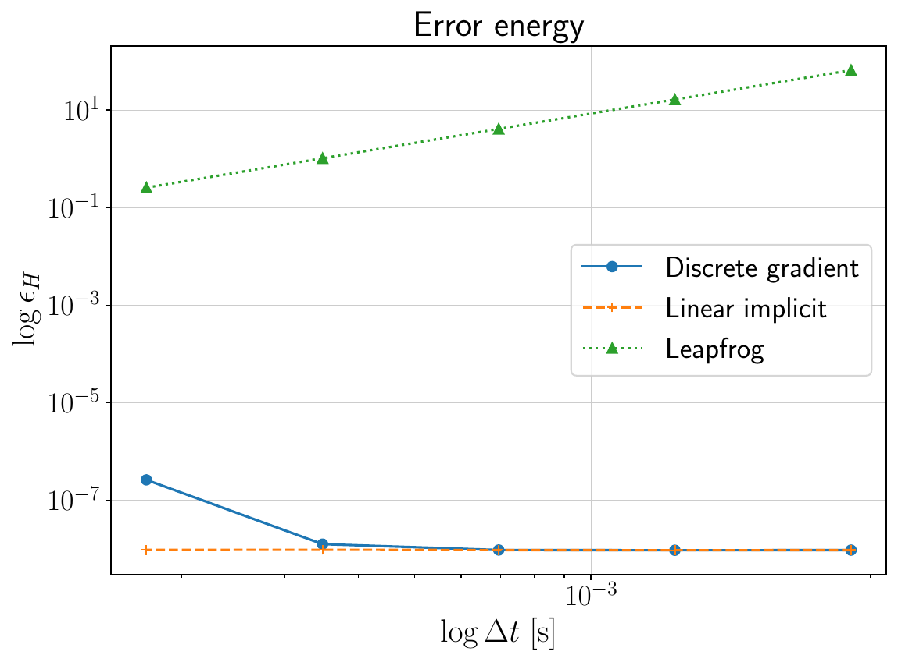
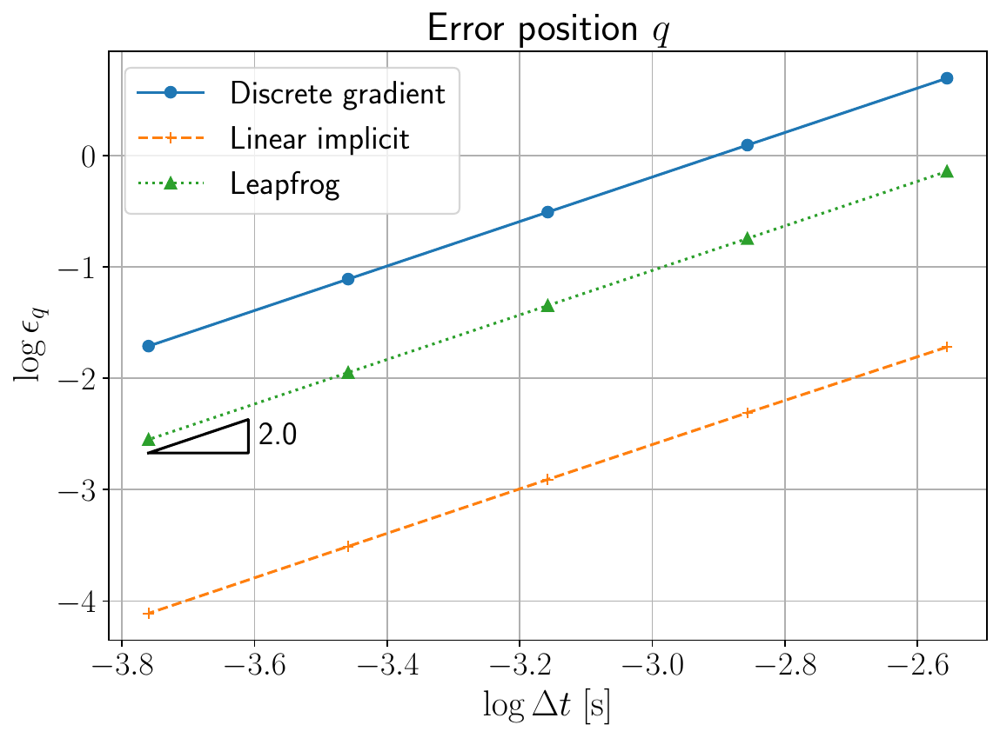
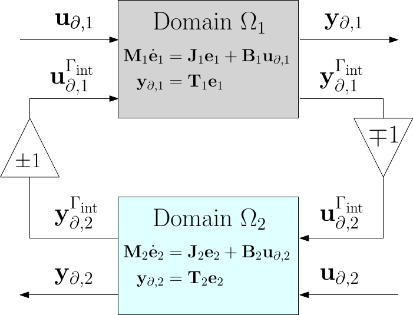

Research
Structure preserving discretization of port-Hamiltonian systems
Since my PhD I have been working on structure preserving methods for port-Hamiltonian systems. To this aim I have primarily used open-source finite element librairies like FEniCS and Firedrake but I also developed my own code for simple simulations.
- Finite element exterior calculus and port-Hamiltonian dynamics
Physical equations are typically written using vector calculus but they can also be written using the language of differential geometry. This latter formalism distiguishes topological and metrical notions and connects integration, derivation using coordinate free expressions. Seemingly different numerical methods (e.g. finite differences, finite elements, finite volumes) can be understood in a unified way when described using tools from differential geometry. Hamiltonian and port-Hamiltonian systems are tipically formulated in a geometric setting. In my research I have established general methodologies on how to discretize port-Hamiltonian systems using Finite Element Exterior Calculus.


- Structural dynamics and integrators In nonlinear mechanics, energy preserving method are preferred as they produce stable and accurate simulations. However this method are tipically implicit and they require Newton iterations to produc a solution. By reformulating the equations, linearly implicit energy conserving method can be devised. For instance, consider the oscillator in Figure 2. The system corresonds to the famous duffing oscillator.

The intergration is capable of preserving the energy exactly and has a lower error with respect to other integrators Figure 3.


- Systems theory and numerical methods System theory provides a structural way of thinking about interconnected system. This can be used to reinterpret numerical method that uses local basis glued together in a strong or weak way. Numerical fluxes in discontinuous methods may benefit from such an interpretation.



Numerical methods for high frequency structural dynamics
Classical finite elements notorously struggle when high frequency waves propagate in solids. Alternative methods can be used to tackle this problem, like Treffz method or statistical energy analysis.